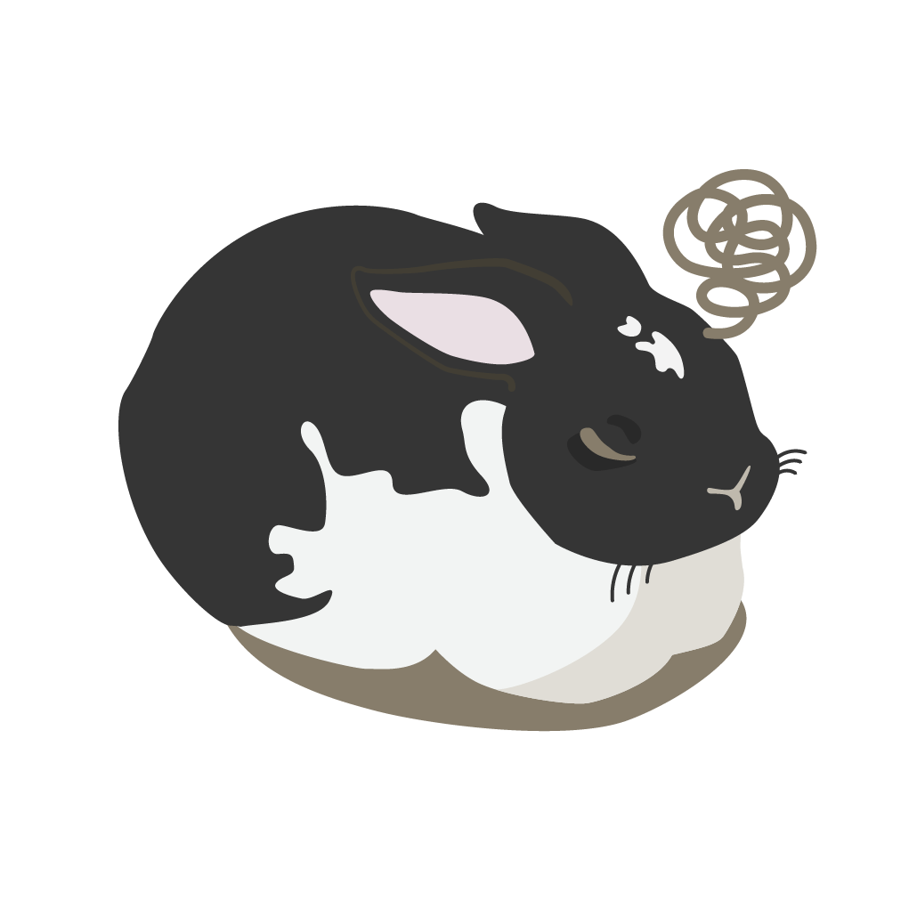
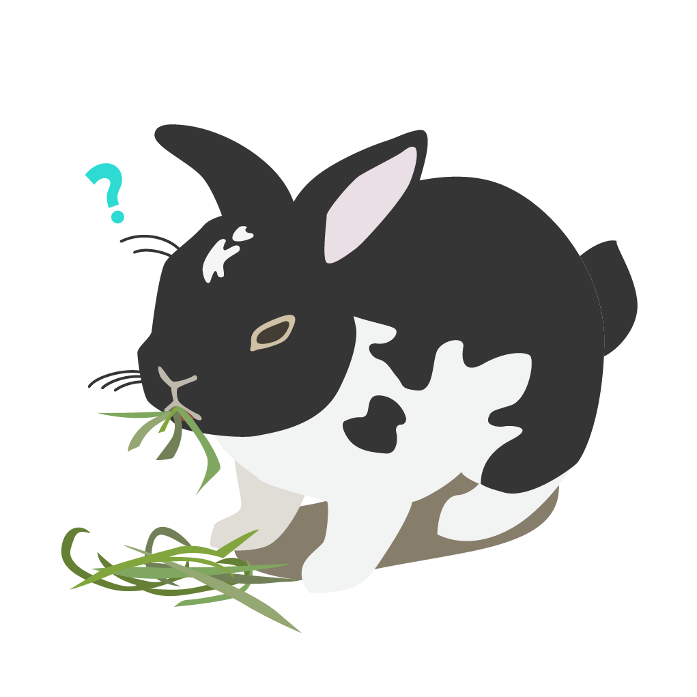
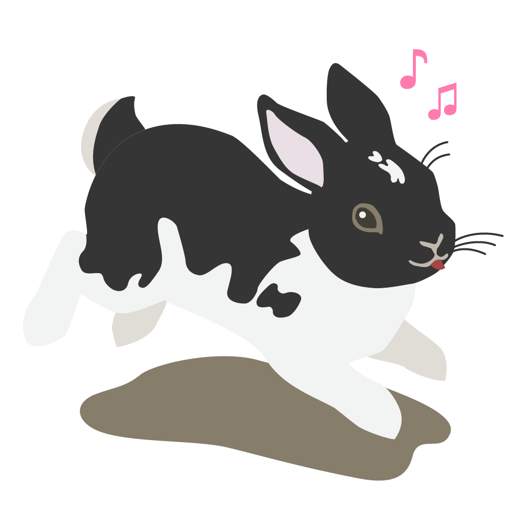
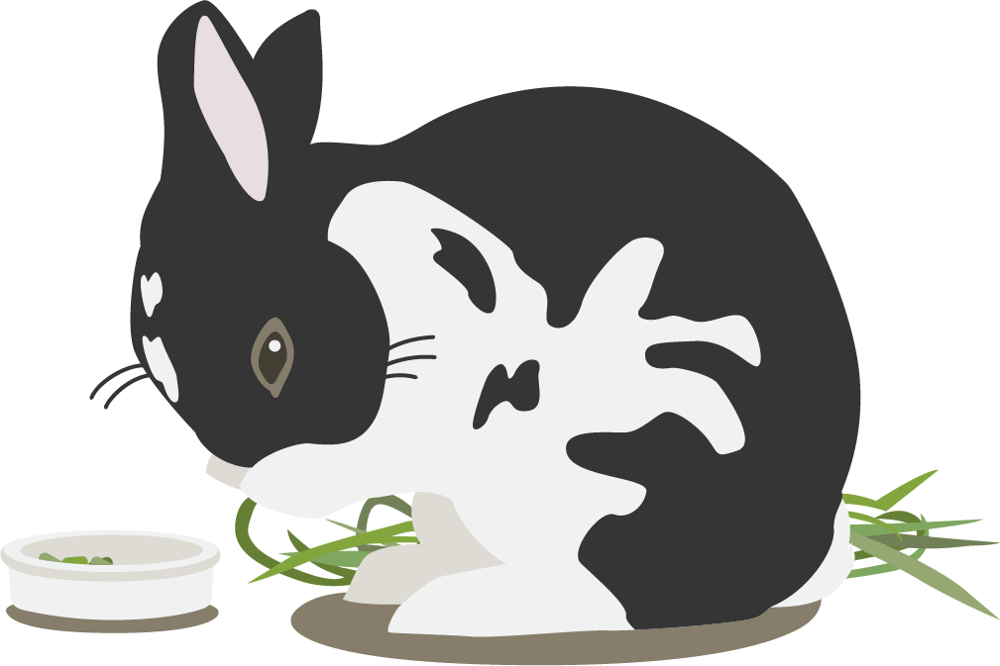
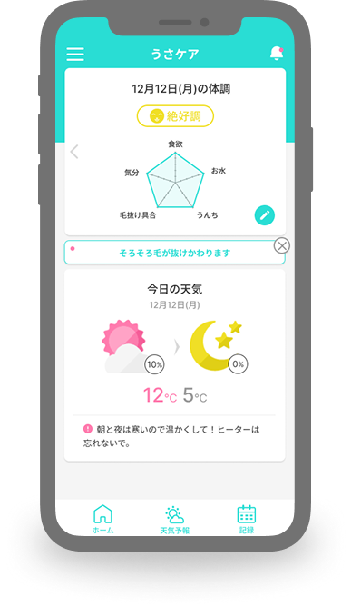
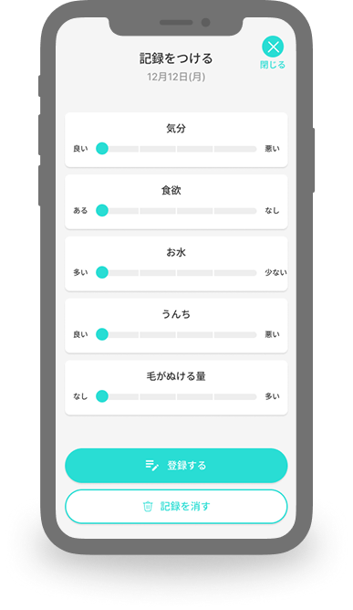
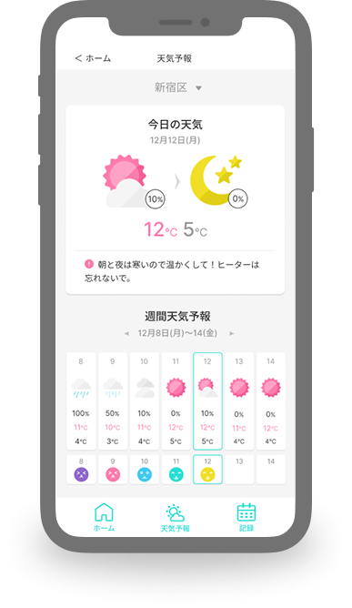
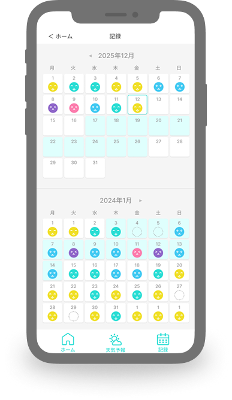

今日の元気、ちゃんとわかる？
いつもと違う？
毛がたくさんぬける時期の
ちょっとした変化も、だいじなサイン。
ぼくの健康を守るため！

おなかのトラブルに気づくため

体の小さな変化にも気づけるようになるため

毎日元気に食べて、動いて、跳ねるため
毛がたくさんぬける時期、じつは要注意
毛がたくさんぬける時期のうさぎは、知らないうちにおなかの調子をくずしやすくなります。
お天気が変わりやすい日がつづくと、いつもとちがう様子が出ることもあります。
元気がない・食べる量が少ないなど、小さな変化に早く気づくことがだいじです。

ぼくの体調かんたんチェック！
今日の元気が形で分かるよ

記録するのは
5つだけ

天気の変化に気をつけて！

調子良い日つづいてる？

よくある気になること
こたえ１うん。
むずかしい操作はないよ。ぽちっとするだけ。
むずかしい操作はないよ。ぽちっとするだけ。
こたえ2だいじょうぶ。
できる日だけでいいんだよ。
できる日だけでいいんだよ。
こたえ3からだの毛が生えかわって、たくさん毛がぬける時期だよ。
こたえ4あつい日やジメジメした日は、体調をくずしやすいからだよ。
こたえ5ぜったいじゃないけど、気づくのが早くなるよ。
さあ、今日からぼくの体調を見守ろう！
ちいさな記録が、ぼくの元気を守る
困ってる？聞いてみよう
入力内容の確認
おなまえ：
メールアドレス：
コメント：